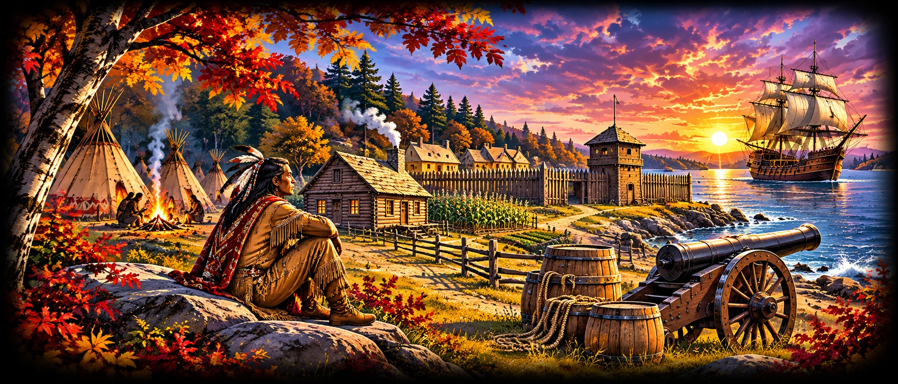

GRADE 5
Early American History
Indigenous America to the Early Republic
Indigenous societies, Atlantic encounters, colonial America, independence and the early republic.
7 units / pathways
View Units
- Indigenous North America — Indigenous societies, geography
- Exploration and Encounters — European exploration, Indigenous encounters
- Colonial America — Thirteen colonies, settlement
- Imperial Conflict — French and Indian War, British policy
- The American Revolution — Independence, revolutionary conflict
- Creating a Republic — Articles of Confederation, Constitution
- The Early Republic — Federalism, political parties